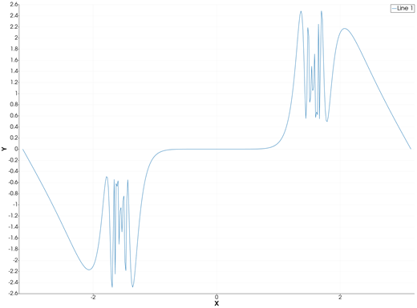
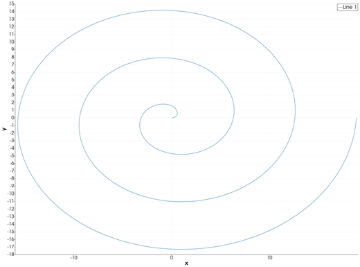
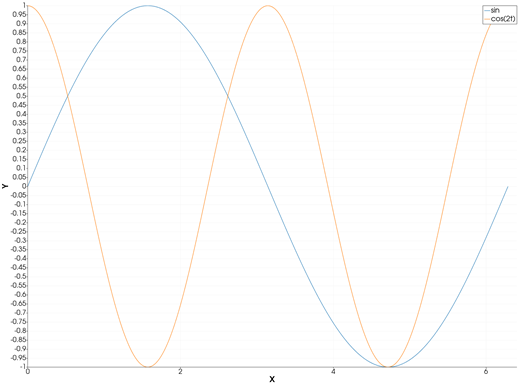

comet — Animated Comet Plot
The comet icon on the X,Y Plot tool's gallery row animates the series of the current page: each curve is drawn in from its first point to its last over about two seconds, with a circle, the comet's head, at its leading point. When the animation ends the page shows the curves as ordinary lines. There is no comet function in iGMT: draw the curves with plot and plot!, then click comet.
Syntax
Draw the curves, then click comet:
p = plot(x, y)
p = plot(y) # against the sample number 1:length(y)
plot!(p, x2, y2) # more curves: they run togetherDescription
- First the page is re-plotted as lines on linear axes, as the plot icon does: a page drawn as bars, areas, stems, ... stays lines afterwards.
- Then every visible series with at least two points is hidden and drawn in again, point by point, in its own colour and line width, with a circle at its head. All the series run at the same time, each covering the same fraction of its points at every frame, and all finish together.
- The axes are held at the range of all the data while it runs, so nothing rescales as the curves grow. The legend is hidden meanwhile.
- At the end the head disappears and the real series come back, with their legend.
While a comet runs, the other gallery icons do nothing. Hidden series are not animated and stay hidden.
The animation is the path the points take in the order they are stored. A curve whose x goes back and forth (a circle, a spiral) is traced as it goes.
Running the Examples
Paste each example into the iGMT window's Julia console, or into the Julia REPL after using InteractiveGMT, then click comet on the gallery row. Each one is complete on its own and draws a new page of the X,Y Plot window. The figures show each page as the animation leaves it.
Examples
Create Comet Plot
x = range(-π, π; length=400)
y = tan.(sin.(x)) .- sin.(tan.(x))
p = plot(x, y)
Trace a Spiral
The comet follows the points in their order, round and round.
t = range(0, 6π; length=500)
p = plot(t .* cos.(t), t .* sin.(t); xlabel="x", ylabel="y")
Run Two Comets Together
Both curves are drawn in at once, each in its own colour.
t = range(0, 2π; length=300)
p = plot(t, sin.(t); legend="sin")
plot!(p, t, cos.(2 .* t); legend="cos(2t)")
Input Arguments
x, y — the curve, as in plot.
Keywords
There are no keywords of its own. The comet's trail takes the series' colour and line width, as set with plot's lc, lw or pen. The speed and the head are fixed: about two seconds per run, a circle at the head.